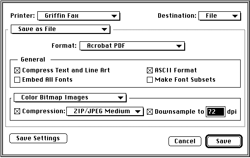

Legacy Document
Important: This document is part of the Legacy section of the ADC Reference Library. This information should not be used for new development.
Current information on this Reference Library topic can be found here:
ADC Home > Reference Library > Technical Notes > Legacy Documents > Printing >
Important: This document is part of the Legacy section of the ADC Reference Library. This information should not be used for new development.
Current information on this Reference Library topic can be found here:
|
Desktop Printer UtilityIn the current LaserWriter 8 driver, the Chooser lists printers which are available on the AppleTalk network (either LocalTalk or AppleTalk) with an NBP type of "LaserWriter." When the user selects one of these printers, LaserWriter 8 creates a desktop printer by sending an Apple Event to the Finder. In the past, this mechanism of setting up printers has served the needs of most users. However, with LaserWriter 8.5.1, Apple is responding to several requests for more flexible desktop printing functionality. To this end, Apple has introduced a new application called Desktop Printer Utility which enables users to create additional types of desktop printers. Users can now create desktop printers which use the Unix lpr protocol for printing, in addition to the regular AppleTalk Printer Access Protocol printers. There are also "hold" printers which represent local print queues and "virtual" printers which represent printers which are not available on the network.
Types of Desktop Printers Currently Implemented With the Desktop Printer UtilityVirtual- Printer (No Printer Connection):Many users have asked Apple to provide a mechanism to create desktop printers that save their PostScript output to a file without having to be connected to a network. This is a useful feature for those users who publish or archive PostScript documents as well as for those users preparing to take a document to a service bureau. This can be done with Desktop Printer Utility by having the user set up a 'virtual printer' that saves PostScript files to disk. Hold- Translator (PostScript):A type of desktop printer useful for PowerBook users is a "hold" desktop printer. Such a desktop printer is always in hold mode and, as the user prints, the spool files appear in the desktop printer queue but are never printed. When the PowerBook is connected to a network with printers, the user can then copy the spool files from the hold desktop printer queue to a desktop printer that represents a real printer on the network. TCP/IP/LPR- Printer (LPR):Many users, especially network administrators at universities, have asked for LPR support for LaserWriter 8. With Desktop Printer Utility, printers that represent TCP/IP printers are supported. When creating a TCP/IP desktop printer, the user provides either the name of the printer or its IP address. When LaserWriter 8.5.1 prints to one of these DTPs, it will send the job using the LPR protocol. DTP Utility CustomizationAlong with the expanded capabilities, Desktop Printer Utility is also customizable. LaserWriter 8.5.1 and Desktop Printer Utility (together) support the creation and use of desktop printers known as Custom DTPs. When printed to, Custom DTPs cause the LaserWriter 8.5.1 driver to create a PostScript file and to launch an application that can post-process the PostScript. This post-processing application can do anything it likes with the PostScript file, such as converting the PostScript into another file format, transferring the file to another location using a modem or a network connection, or displaying the PostScript file to the user. Customization simply requires a developer to create a few resources and the LaserWriter 8.5.1 driver will do the rest. Please see "Customizing Desktop Printer Utility" in this issue for more information. The Extended '
|
|
Opcode |
Operation |
|
4 |
|
|
5 |
|
|
6 |
|
|
7 |
|
|
8 |
|
|
9 |
|
|
10 |
|
|
11 |
|
|
12 |
|
|
13 |
|
|
14 |
|
|
15 |
|
|
16 |
|
|
17 |
|
|
18 |
|
|
19 |
|
|
20 |
|
|
21 |
|
|
22 |
|
Please refer to "Meet PrGeneral, the Trap that Makes the Most of the Printing Manager" in develop Issue 3 for more information on PrGeneral.
ColorSync 2.1.x provides a new profile tag that contains the profile's
name in several languages. This tag, 'dsc2', provides localized names for
a given profile. LaserWriter 8.5.1 looks inside of a profile for this tag
and tries to match the language of the system font against the list of
languages in the 'dsc2' tag. If a match is found, the
localized text from
the profile is used in the Print Dialog's 'Color Matching' panel. If the
scripts can not be matched, then the string from the profile's name tag is
used. See the Advanced Color Imaging on the Mac OS
book for more
information on the 'dsc2' tag.
Added to LaserWriter 8.5.1's 'Color Matching' panel is a pop-up that allows the user to override the system profile's intent for a given print job. The intent pop-up lists the four possible intents (Perceptual, Relative Colorimetric, Saturation, and Absolute Colorimetric) as documented in the ICC Profile Specification. The pop-up also offers an automatic option which will cause the driver to use a Saturation intent when drawing text and line objects but to use the Perceptual intent on images.
LaserWriter 8.5.1 adds support for the PrGeneral opcode
(enableColorMatchingOp) for enabling and disabling color matching
as described in Advanced Color Imaging on the Mac OS. This PrGeneral
opcode is only supported if the caller passes in an extended print record.
If the caller passes in a standard print record, PrGeneral returns
an error
indicating that the opcode is not implemented. Enabling color matching via
this call puts LaserWriter 8.5.1 into PostScript color matching mode with
the printer's default Color Rendering Dictionary. This is the only device
independent color matching mode available in the driver. If the caller
disables color matching using PrGeneral, then the driver
uses the Color/Gray
scale color mode.
LaserWriter 8.5.1 allows applications to determine the destination
profile set by the user in the Color Matching panel. In order to get this
information, an application must use the extended print record. After
running the Print dialog, an application can use the PrGeneral
kGetExtendedPrintRecOp (opcode 19) to obtain a Collection Manager
collection describing the user's job parameters. Once this collection
is obtained, the application uses the Collection Manager to obtain tag
kHintDestProfileTag ('dprf'),
id kHintDestProfileId (1). The data returned
by the Collection Manager for this tag is the FSSpec of the user's
chosen
destination profile. If the tag does not exist in the collection, then the
user has requested the printer's default Color Rendering Dictionary. For more
information on collections, please see Inside Macintosh: QuickDraw GX
Environment and Utilities.
Today, when printing in two-pass mode with LaserWriter 8.4.x and below, all of a document's fonts are downloaded prior to the PostScript for the first page. In order to improve the printing time of the first page of a document, when printing in two-pass mode directly to a printer, LaserWriter 8.5.1 sacrifices page independence and downloads fonts immediately prior to the first page in the document in which they are used. By distributing the downloading of fonts over a document, Apple has improved the printing time for the first page of a document in most cases.
With LaserWriter 8.5.1, Apple has added collation to the driver. The general panel of the Print Dialog will add a collate check box if there is no collate option available in the PPD. With LaserWriter 8's collate option, when it is checked, and while printing n copies, the LaserWriter 8.5.1 driver will print the entire document n times in the following order: 1-2-3, 1-2-3, rather than 1-1, 2-2, 3-3. If the printer's PPD states that the printer supports collation itself, then the LaserWriter 8.5.1 driver is prevented from printing the job n times, and the collate option shows up in the 'Printer Specific' panel. In this case, the printer, not LaserWriter 8.5.1, is responsible for collating the output.
LaserWriter 8.5.1, in order to more fully support printers that use deferred media selection, and to make it easier to print onto multiple media types. If a printer indicates that it supports media types (with the "*MediaTyp" keyword in the PPD), these types are listed in the Paper pop-ups in the Print Dialog.
Due to many requests, in order to support the creation of Adobe Acrobat PDF documents, the Save panel of LaserWriter 8.5.1 adds Acrobat PDF as one of the supported formats. When Acrobat PDF is selected the PDF options are displayed in the save panel.

When the user selects Acrobat PDF as the destination file format, LaserWriter 8.5.1 creates a PostScript file in the user's Temporary Items folder, and then launches Acrobat Distiller passing the location of the PostScript file and the intended location of the PDF file. The driver waits for Distiller to finish making the PDF file and then deletes the temporary PostScript file. This process is referred to as 'local distilling' as it requires Distiller to be run on the user's machine rather than on a remote server.
LaserWriter 8.5.1 uses Apple Events to communicate with Distiller, so the application running the driver's converter must be high-level event aware. In practice, this means that if an application is not high-level event aware, then foreground printing will be disabled if save to PDF is requested. In order to create PDF files from non-high level event aware applications, the user must print in the background.
|
Note: |
This Technote has described all of the new features of LaserWriter 8.5.1. We encourage users and developers to explore the new printing capabilities with their printer.
PPD 4.3 Specification(Technote 5003) from Adobe Systems Incorporated.
PostScript Level 3 documentation from Adobe Systems Incorporated.
Inside Macintosh: Imaging With QuickDraw
Inside Macintosh: Advanced Color Imaging on the Mac OS
Inside Macintosh: QuickDraw GX Environment and Utilities
ICC Profile Specification from www.color.org.com
|
|
Acrobat version of this Note (372K). |
|